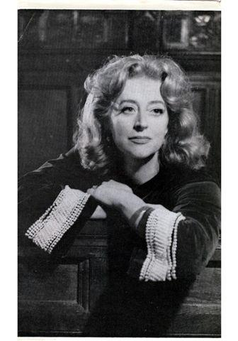

Aboriginal Rangers Face a Sisyphean Task: Waves of Trash
YALANGBARRA, Australia — As the sun dropped below the horizon and darkness spread across the
vast Northern Territory sky, the men and women scanned the terrain one last time for
potential prey.
It was dinnertime for the Dhimurru Rangers, a group of mostly Indigenous Australians who had
spent a long day cleaning up the polluted beaches of the continent’s northern coast. Soon
they would be eating freshly caught fish and seafood cooked under the stars on an open fire,
as their ancestors did.
For thousands of years, the Yolngu Aboriginal people have lived in this part of Australia,
hunting in its forests and fishing in its waters.
But this once unspoiled land is now polluted. Thousands of pounds of plastic garbage wash up
here annually and so-called ghost nets — abandoned nylon fishing trawls — entangle and kill
endangered animals including sea turtles, dugongs and sharks.
The Dhimurru Rangers are one of more than 100 Indigenous groups spread across the continent
who have taken on the job of protecting the land of their forebears, combining traditional
methods with contemporary conservation.
In Arnhem Land along the Gulf of Carpentaria, they are the heirs and stewards of 3,300 square
miles of land and sea. They painstakingly comb the beaches by hand, picking up as much debris
as possible. The task is Sisyphean as each day delivers literal waves of new trash.
Sagrada Familia, a Barcelona Masterpiece, and Scofflaw?
The Sagrada Familia basilica in Barcelona has worldwide fame as an architectural treasure,
the dreamlike masterpiece of the Catalan architect Antoni Gaudí, which draws millions of
visitors a year though it is still under construction, 136 years after work began.
What it has not had for more than a century, according to the city, is a valid building
permit.
The Sagrada Familia basilica has agreed to pay city authorities 36 million euros, or about
$41 million, over 10 years to settle the dispute over the legality of the work and help pay
for transportation improvements around the basilica.
Using the permit as leverage, the administration of Barcelona’s far-left mayor, Ada Colau,
took on the Sagrada Familia, part of a trend of civil authorities around the country
challenging the legal and tax status of Roman Catholic Church properties. Ms. Colau hailed
the agreement, announced on Thursday, as historic.
The Sagrada Familia’s board had denied any wrongdoing, saying that it had a building permit
— one issued in 1885 by Sant Martí de Provençals, which was an independent town at the time.
Barcelona officials contend that after Sant Martí was absorbed into the city several years
later, the construction required a Barcelona permit; the board says that for more than a
century, no one asked for any such thing.
Work began in 1882 on the Sagrada Familia, whose radical design, incorporating elements of
Gothic revival, Art Nouveau, modernism and Asian art, has been compared to everything from a
Dr. Seuss drawing to an underwater forest of kelp and coral.
Gaudí died after being hit by a tram in 1926, with the project only about one-quarter
complete, and for decades after his death, progress was slow, sporadic and often intensely
debated. But the pace of work picked up in recent years. The Sagrada Familia is over
two-thirds completed, and planners hope to finish it in 2026, in time for the centenary of
Gaudí’s death.
Critics contend that the Sagrada Familia has drifted too far from the vision of Gaudí — some
of his plans were destroyed long ago — or that it has more appeal as one of the world’s
greatest unfinished monuments.
Even incomplete and surrounded by scaffolding and building cranes, Sagrada Familia is
Barcelona’s most famous monument, visited by over 10,000 people a day and pictured on
countless postcards and calendars. In November 2010, Pope Benedict XVI consecrated the church
as a basilica and held Mass there before 7,000 people.
Ms. Colau and her administration accused the basilica’s board of working without a building
permit, failing to submit required plans to tear down existing residential structures to
finish the Sagrada Familia’s esplanade, and failing to pay construction taxes.
The city’s complaints struck a nerve in a country where, over several decades, the church had
quietly registered thousands of properties, including the famed cathedral-mosque Córdoba, as
tax-exempt, leading to claims of tax evasion and a debate over how the church spends tourism
revenue.
After a Socialist prime minister, Pedro Sánchez, took power in June, his government announced
that it would publish an inventory of all property claimed by the Catholic Church, opening
the door to potential challenges to that ownership.
Ms. Colau faced pressure to resolve the conflict over the Sagrada Familia ahead of what is
expected to be an uphill campaign for re-election next spring.
Under the deal struck this week, city authorities will go ahead with transportation
infrastructure work around Sagrada Familia, including a feasibility study to build a
passageway linking the basilica directly to the closest subway station. The agreement did not
settle the dispute over the planned seizure of nearby homes.
But the basilica will, at last, have a building permit.
Evelyn Anthony, Writer of Spy Thrillers, Dies at 92

Evelyn Anthony, a best-selling British novelist who transitioned from historical fiction to
espionage thrillers, becoming one of the first female writers to explore the spy genre, died on
Sept. 25 at her home in Essex, northeast of London. She was 92.
Her son Barley Ward Thomas said the cause was heart failure.
As her writing career began in the early 1950s, Evelyn Ward Thomas took on the pseudonym Evelyn
Anthony (for St. Anthony, the patron saint of lost items). The name stuck, first on the short
stories she wrote for magazines and then on novels that reimagined the lives of monarchs, most of
them British.
She wrote a trilogy about Catherine the Great, starting with “Rebel Princess” (1953), and books
about Queen Victoria and her consort, Prince Albert; Queen Elizabeth I; and Anne Boleyn, the
second wife of Henry VIII.
A reviewer for The Los Angeles Times wrote that in “Anne Boleyn: A Novel” (1957), Ms. Anthony
“realizes a full-blooded, engaging and tragic character in Anne” and “makes the most of the
intrigue and momentous events of the period.”
But in the late 1960s Ms. Anthony turned to telling suspenseful stories about Cold War espionage,
entering a field dominated by men like John le Carré, Ian Fleming, Eric Ambler and Len Deighton.
“What made me change from historical novels was getting to know people who had been in the
Special Operations Executive and MI5 during the war,” she said in an interview in 1991 with the
British newspaper The Observer, referring to a secret British force that undertook sabotage
missions against Hitler’s Germany and the British domestic security agency.
Go beyond the headlines.
Subscribe to The New York Times
“Listening to them talk fired my imagination and gave me ideas for several plots,” she added.
Her son Christian Ward Thomas said in an email that she had also wanted “her stories to be more
contemporary and appeal to a wider audience.”
With books like “The Legend” (1968) and “The Assassin” (1970), Ms. Anthony joined a small group
of women, including Helen MacInnes and Ann Bridge, who wrote spy thrillers.
Phyllis B. Lassner, the author of “Espionage and Exile: Fascism and Anti-Fascism in British Spy
Fiction and Film” (2016), said in an email that the paucity of women in the espionage genre was
most likely attributable to “the subject of the Cold War, with its compromised agents, and, in
the British case, MI5 and 6 as exclusive enclaves that are mirror images of the men’s clubs, all
of which excluded women.”
Ms. Anthony found that spycraft, assassinations and intra-agency power plays gave her fertile
ground for dozens of novels, among them four about a female agent, Davina Graham, who rises to
direct the British Secret Intelligence Service, best known as MI6.
Kirkus Reviews praised “The Defector,” the first of the Graham books, as “classy spy intrigue”
that showed a continuing sharpening of Ms. Anthony’s talents.
“This East-West espionage, with echoes of ‘The Spy Who Came in From the Cold,’ is one of her
best,” the reviewer said.
Image
Ms. Anthony’s book “The Tamarind Seed” (1971) was turned into a film starring Julie Andrews and
Omar Sharif.
Gayle Lynds, who began writing espionage fiction in the mid-1990s — among her books is “The
Assassins” (2015) — said in an email that she admired Ms. Anthony’s willingness to write about
Cold War treachery and geopolitics with female protagonists.
“Because of Ms. Anthony and a few others of her generation,” Ms. Lunds said, “we modern spy
writers have a rich heritage to draw on and evidence that it can be done by women and done well.”
Evelyn Bridget Patricia Stephens was born on July 3, 1926, in London. Her father, Henry Stephens,
was a lieutenant commander in the Royal Navy who, during World War II, invented an antiaircraft
gunnery simulator called the Dome Teacher. Her mother was Elizabeth (Sharkey) Stephens.
Ms. Anthony was educated at home and at a boarding school in a London suburb but never went to
college. A voracious reader with a vivid imagination, she liked to engage people with her
storytelling, a path that led to writing. She published her first short story at 17.
“I am basically an entertainer,” she said, “and I’m very proud of it because it is an honorable
thing to be.”
One of her most popular novels, “The Tamarind Seed” (1971), centers on the international intrigue
that ensues after a British woman who handles classified information in her job at the United
Nations unsuspectingly meets a dangerous Soviet agent while on vacation in Barbados.
“Espionage is something which has always intrigued me,” Ms. Anthony told The Guardian in London
soon after the novel was published.
“Curiously enough, a lot of women are extremely good at it,” she added. “I don’t just mean the
Mata Hari bit about ‘Come into my bedroom and tell me all your secrets,’ but on the
administrative side, because they have on the whole tremendously good memories, with the superb
eye for detail and the imaginative flair which is needed in these jobs.”
A film adaptation of “The Tamarind Seed,” starring Julie Andrews and Omar Sharif and directed by
Blake Edwards, was released in 1974.
In 1994, Ms. Anthony had nearly retired from writing when she was named High Sheriff of Essex, a
largely ceremonial position with a one-year term that entails being the British Crown’s
representative to the county judiciary. She was the first woman to hold the office.
In addition to her sons Barley and Christian, she is survived by a daughter, Susan Wintour; two
other sons, Anthony and Ewan; and 17 grandchildren. A daughter, Kitty, died in 1995. Her husband,
Michael Ward Thomas, a mining company executive, died in 2004.
Ms. Anthony said she had once been approached about becoming a spy herself. Although she did not
say who asked her, she told The Guardian that she was too much of a coward to venture into that
dangerous world.
“This, I thought, was bloody crazy,” she said, “and I lack the steely nerve you need, I’m
afraid.”